Heidi pode parecer inofensiva à primeira vista, mas não se engane por trás daquele sorriso encantador está uma das magas mais mortais de Dominion. Conhecida por seus ataques rápidos e pela fúria da natureza, Heidi pode virar o rumo da batalha com dano puro e esquivas imprevisíveis.
Seja para montar uma equipe mágica poderosa ou buscar um contra-ataque contra atacantes físicos, este guia mostrará por que Heidi continua sendo uma heroína de nível superior. Vamos descobrir suas habilidades, melhores aliados e os segredos para torná-la imparável em Hero Wars: Dominion Era.
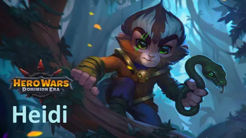
Guia da Heidi - Hero Wars: Dominion Era, um jogo desenvolvido pela Nexters.
Quem é Heidi?
Heidi é uma maga astuta que luta a partir da linha do meio, usando sua inteligência e agilidade para superar os inimigos e atacar com uma poderosa magia de veneno. Embora sua alta Esquiva a torne difícil de acertar, o que realmente a diferencia é seu dano puro ele ignora completamente os efeitos de Esquiva e Armadura.
Isso torna Heidi extremamente eficaz contra heróis evasivos populares como Dante e Aurora, cuja principal defesa depende de desviar de ataques. Contra eles, as toxinas de Heidi sempre acertam o alvo, transformando equipes baseadas em esquiva em presas fáceis.
Classe: Maga
Posição: Linha do Meio
Atributo Principal: Inteligência
O primeiro artefato de Heidi aumenta a esquiva de toda a equipe, tornando-a uma parceira perfeita para heróis como Aurora, que se beneficiam de defesas baseadas em evasão. Com aliados como Nebula e Celeste, Heidi pode liberar ataques mágicos amplificados capazes de derreter até os oponentes mais resistentes.
Sua sinergia com Dorian aumenta ainda mais seu dano, permitindo que seus ataques venenosos drenem a vida dos inimigos enquanto ela permanece segura atrás das linhas de frente. Ágil, mortal e hipnotizante — Heidi é a tempestade silenciosa que seus inimigos nunca veem chegando.
Prós e Contras da Heidi – Hero Wars: Web & Facebook
✅ Prós
Alto dano puro proveniente de habilidades como Flor da Morte e Cuspe Tóxico, eficaz contra equipes com alta esquiva ou defesa física.
Forte sinergia com heróis como Dorian, Aurora, Nebula e Celeste, aumentando o potencial de dano por veneno e dano puro.
Excelente capacidade de sobrevivência graças à esquiva e à resistência a controles de grupo, especialmente quando combinada com a habilidade Camuflagem de Espionagem.
O primeiro artefato aumenta a esquiva de toda a equipe, proporcionando benefícios defensivos em área.
Capaz de atingir múltiplos inimigos com alto dano puro, tornando-a ideal para eliminar ondas de inimigos ou ameaças na retaguarda.
❌ Contras
Altamente dependente de aprimoramentos de habilidades e da priorização correta de glifos e artefatos para maximizar dano e sobrevivência.
Vulnerável a efeitos de drenagem de energia ou encantamento que impedem a ativação de habilidades (por exemplo, contras como Jorgen ou Lian).
Tem dificuldade contra equipes focadas em dano mágico, que ignoram sua esquiva, como inimigos com alto dano puro ou mágico.
O tempo de ativação da habilidade suprema é crucial; sem suporte para geração de energia, seu dano pode ser atrasado.
Baixa defesa física a torna suscetível a ataques físicos explosivos quando não está devidamente protegida.
Prioridade de Melhoria das Habilidades da Heidi - Hero Wars: Dominion Era
As habilidades de Heidi focam em causar dano puro que ignora defesas e esquiva, tornando-a extremamente eficaz contra heróis evasivos como Dante e Aurora. Entender como cada habilidade evolui ajuda a decidir quais priorizar primeiro para obter o melhor desempenho nas batalhas.
1 - Flor da Morte
Heidi invoca um grande cogumelo venenoso no centro da equipe inimiga. Os esporos envenenam continuamente todos os inimigos próximos, causando dano puro ao longo do tempo. Essa habilidade atinge vários inimigos ao mesmo tempo, tornando-se sua fonte de dano mais forte e confiável em lutas prolongadas.
Fórmula: (55%Ataque Mágico + Nv * 70) Dano Puro a cada 3s.
Prioridade de Evolução:Muito Alta – Esta é a principal habilidade de dano da Heidi. Afeta múltiplos inimigos e escala bem com seu Ataque Mágico, sendo essencial aprimorar primeiro para máxima eficiência.
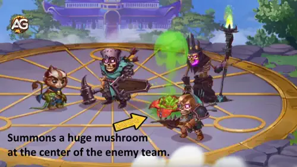
Flor da Morte – A habilidade de dano em área mais poderosa de Heidi em Hero Wars: Dominion Era.
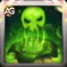
1 - Flor da Morte Sufocante (Ascensão)
A melhoria de Ascensão torna a Flor da Morte ainda mais perigosa ao aumentar o dano do veneno a cada 0,5 segundo. Isso faz com que o dano acumule rapidamente, destruindo até inimigos mais resistentes.
Fórmula: +10% de Dano Puro a cada 0,5s.
Prioridade de Evolução:Alta – Desbloquear essa melhoria faz com que a habilidade principal da Heidi escale muito mais rápido, mas como a Ascensão leva tempo para ser obtida, é um aprimoramento secundário após evoluir as habilidades principais.
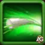
2 - Cuspe Tóxico
Heidi dispara um dardo envenenado no inimigo mais próximo, cegando-o e causando dano puro ao longo do tempo. O efeito de cegueira é curto, mas pode interromper atacantes perigosos como K’arkh ou Dante, dando à sua equipe uma vantagem de sobrevivência.
Fórmula: 51369 Dano Puro + (60%Ataque Mágico + Nv * 75) Dano Puro ao longo de 5s.
Prioridade de Evolução:Alta – O veneno constante e o efeito de cegueira fazem desta uma excelente habilidade secundária. É de alvo único, mas oferece dano e controle, sendo útil em todas as batalhas.
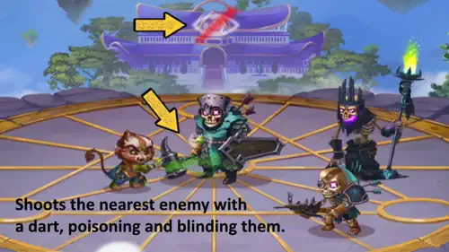
Cuspe Tóxico – Uma habilidade de controle e veneno poderosa, ideal contra inimigos da linha de frente.
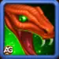
3 - Encantadora de Serpentes
Heidi lança uma cobra contra o inimigo com a menor quantidade de vida, que o morde instantaneamente causando um enorme dano puro. Essa habilidade é perfeita para finalizar inimigos com pouca vida que sobreviveram aos efeitos do veneno.
Prioridade de Evolução:Média-Alta – Excelente para garantir abates e aumentar o dano explosivo geral. É menos consistente que o veneno em área, mas ainda muito poderosa quando evoluída mais tarde.
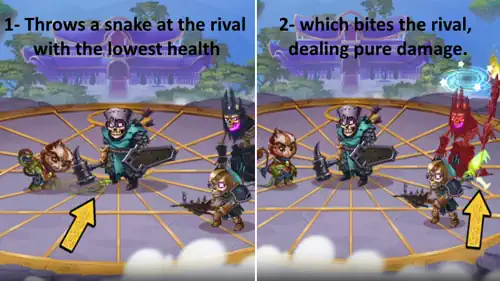
Encantadora de Serpentes – Desfere uma mordida letal em inimigos enfraquecidos.
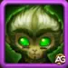
4 - Camuflagem Espiã
Quando Heidi evita dano por 2 segundos, ela se camufla, aumentando sua chance de esquiva contra qualquer tipo de ataque. Cada esquiva bem-sucedida restaura energia, ajudando-a a usar suas habilidades mais rapidamente. No entanto, como sua principal defesa já vem da esquiva e ela geralmente está segura na linha do meio, essa habilidade não é tão essencial no início.
Fórmula: A esquiva aumenta de 20% para (Nv * 0.5 + 40%).
Prioridade de Evolução:Média – Oferece boa sobrevivência, mas não aumenta diretamente o dano. Melhore-a após suas habilidades ofensivas principais.
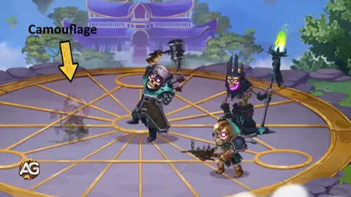
Camuflagem Espiã – Concede aumento de esquiva e recuperação de energia ao evitar ataques.
4 - Camuflagem Espiã Mortal (Ascensão)
Após a Ascensão, Camuflagem Espiã ganha um efeito ofensivo adicional. Enquanto camuflada, Heidi causa dano extra com suas habilidades, que aumenta quanto mais tempo ela permanecer escondida transformando essa habilidade defensiva em uma ferramenta híbrida de ataque.
Fórmula: Dano adicional das habilidades de 5% até 20%.
Prioridade de Evolução:Baixa – É útil em estágios avançados do jogo, mas como a Ascensão é desbloqueada tardiamente e depende de permanecer camuflada, não é prioridade para iniciantes.
Melhor Visual para Heidi - Hero Wars: Era do Domínio
Os visuais da Heidi aumentam sua sobrevivência, evasão e poder mágico. Escolher a ordem certa de aprimoramento ajuda a maximizar o potencial do seu veneno e do dano puro em batalhas contra equipes físicas ou baseadas em esquiva, como Dante e Aurora.
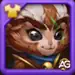
Visual Padrão
Bônus de atributos: Inteligência +1.365
Ataque Mágico proveniente da Inteligência: +4.095
Defesa Mágica proveniente da Inteligência: +1.365
Ataque Físico proveniente da Inteligência: +1.365
Prioridade de Evolução:Média-Alta – Aumenta o atributo principal da Heidi, melhorando levemente seu Ataque Mágico e Defesa. No entanto, é menos impactante que os visuais de Ataque Mágico direto e costuma ser aprimorado depois deles.
Total de Pedras de Visual de Inteligência para o nível máximo:
30.825
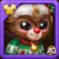
Visual de Inverno
Bônus de atributos: Esquiva +2.965
Prioridade de Evolução:Alta – Aumenta a sobrevivência da Heidi ao melhorar sua Esquiva, o que tem ótima sinergia com sua habilidade Camuflagem Espiã. Ideal para mantê-la viva por mais tempo contra atacantes físicos e ampliar o tempo ativo do veneno.
Total de Pedras de Visual de Inteligência para o nível máximo:
55.410
Nota:A skin de inverno da Heidi pode ser desbloqueada durante o evento de Visuais de Inverno.
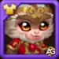
Visual Lunar
Bônus de atributos: Ataque Mágico +10.650
Prioridade de Evolução:Muito Alta – O melhor visual ofensivo da Heidi, aumentando diretamente todas as fórmulas de dano puro e veneno. Como o Ataque Mágico influencia todas as habilidades, este deve ser o primeiro visual a ser maximizado para desempenho consistente nas batalhas.
Total de Pedras de Visual de Inteligência para o nível máximo:
55.410
Visual Demoníaco
Bônus de atributos: Ataque Mágico +10.650
Prioridade de Evolução:Muito Alta – Também aumenta o Ataque Mágico da Heidi e funciona de forma semelhante ao Visual Lunar. É uma excelente escolha secundária após maximizar o Lunar, ampliando ainda mais o potencial total de dano.
Total de Pedras de Visual de Inteligência para o nível máximo:
55.410
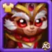
Visual Solar
Bônus de atributos: Vida +106.645
Prioridade de Evolução:Média – Concede um grande aumento de Vida, ajudando-a a sobreviver a danos em área ou explosões mágicas. Útil contra equipes com forte dano em área, mas menos essencial que os visuais de Esquiva ou Ataque Mágico para o desempenho geral.
Total de Pedras de Visual de Inteligência para o nível máximo:
55.410
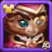
Visual Romântico
Bônus de atributos: Defesa Mágica +10.650
Prioridade de Evolução:Baixa – Oferece melhor proteção contra dano mágico, mas não traz benefícios ofensivos. É o visual menos impactante para o desempenho da Heidi e deve ser evoluído por último.
Total de Pedras de Visual de Inteligência para o nível máximo:
55.410
Prioridade de Evolução dos Glifos da Heidi
Os glifos da Heidi aprimoram sua força de veneno, sobrevivência e eficiência de esquiva. Focar nos corretos ajuda-a a atacar com mais força enquanto permanece intocável contra equipes físicas e evasivas como Dante e Aurora.
1º Glifo - Ataque Mágico:
Este glifo aumenta diretamente o poder de todas as habilidades de veneno da Heidi. Cada habilidade escala com Ataque Mágico, o que aumenta tanto seus efeitos de dano mágico quanto puro.
Ganho de atributos: +6.500 Ataque Mágico
Prioridade de Evolução:Muito Alta – O Ataque Mágico aumenta todas as fórmulas de dano de veneno e dano puro, tornando este o glifo mais valioso para evoluir primeiro.
2º Glifo - Armadura:
A Armadura ajuda Heidi a resistir a ataques físicos. Como ela já possui uma boa Esquiva, este glifo funciona como uma camada extra de defesa, protegendo-a de golpes que conseguem passar pela evasão.
Ganho de atributos: +6.500 Armadura
Prioridade de Evolução:Média-Alta – Útil para sobreviver mais tempo contra equipes físicas fortes quando a Esquiva não é ativada.
3º Glifo - Defesa Mágica:
A Defesa Mágica reduz o dano recebido de magos inimigos. Embora não seja o principal tipo de ameaça para Heidi, este atributo pode ajudá-la a sobreviver mais contra equipes de magos com muito controle.
Ganho de atributos: +6.500 Defesa Mágica
Prioridade de Evolução:Média – Útil, mas situacional, já que Heidi geralmente se destaca contra equipes físicas e baseadas em esquiva, e não contra composições puramente mágicas.
4º Glifo - Esquiva:
A Esquiva é uma das principais forças da Heidi. Ela permite evitar completamente ataques físicos e gerar energia por meio da habilidade Espionagem Clandestina sempre que esquiva com sucesso.
Ganho de atributos: +1.995 Esquiva
Prioridade de Evolução:Alta – Melhora a capacidade da Heidi de evitar dano e carregar habilidades mais rapidamente. Forte sinergia com sua habilidade Espionagem Clandestina e com equipes lideradas por Aurora.
5º Glifo - Inteligência:
Como atributo principal da Heidi, a Inteligência aumenta o Ataque Mágico e a Defesa Mágica, fortalecendo tanto seu dano quanto sua sobrevivência.
Ganho de atributos: +1.135 Inteligência
- Ataque Mágico proveniente da Inteligência: +3.405
- Defesa Mágica proveniente da Inteligência: +1.135
- Ataque Físico proveniente da Inteligência: +1.135
Prioridade de Evolução:Alta – Aumenta ataque e defesa ao mesmo tempo; valioso para o crescimento a longo prazo e melhor desempenho contra danos mágicos e físicos.
Prioridade de Evolução dos Artefatos da Heidi – Hero Wars: Dominion Era
Os artefatos da Heidi amplificam seu dano de veneno, sua sobrevivência e o suporte à equipe. Priorizar os artefatos corretos aumenta seu poder ofensivo e a torna mais difícil de eliminar em batalha.
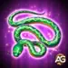
Artefato de Arma: Mean Koba
Ganho de atributos: Esquiva +13.941
Prioridade de Evolução:Muito Alta – É ativado com a habilidade suprema da Heidi (Shieldbreaker), concedendo bônus de atributos para toda a equipe. Maximiza tanto seu dano quanto a sinergia com o time, sendo um dos principais artefatos a evoluir primeiro.
Artefato de Livro: Livro das Ilusões
Ganho de atributos: Vida +83.649, Esquiva +4.647
Prioridade de Evolução:Alta – Aumenta significativamente a sobrevivência da Heidi, permitindo que ela permaneça mais tempo nas lutas para aplicar dano de veneno. Sua combinação de vida e esquiva é essencial contra equipes focadas em dano físico.
Artefato de Anel: Inteligência
Ganho de atributos: Inteligência +6.249
- Ataque Mágico proveniente da Inteligência: +18.747
- Defesa Mágica proveniente da Inteligência: +6.249
- Ataque Físico proveniente da Inteligência: +6.249
Cada ponto de Inteligência concede três pontos de Ataque Mágico, um ponto de Defesa Mágica e um ponto adicional de Ataque Físico, caso a Inteligência seja o atributo principal do herói.
Prioridade de Evolução:Muito Alta – Fornece grandes aumentos no dano de veneno da Heidi e melhora sua defesa mágica. Essencial para evoluir cedo, equilibrando ataque e sobrevivência.
Melhor Patronagem para Heidi
Heidi se beneficia de mascotes que aumentam seu dano puro, frequência de uso da habilidade suprema e capacidade de sobrevivência. Priorizar os mascotes certos maximiza sua eficiência tanto em batalhas PvE quanto PvP.
Albus maximiza o dano puro da Heidi, aprimorando todas as suas habilidades de veneno, como Deathflower e Toxic Spit. A patronagem também aumenta o Ataque Mágico e o Ataque Físico, tornando-o ideal para expedições, aventuras e qualquer cenário PvE.
Cain concede energia bônus sempre que Heidi esquiva de um ataque com sucesso. Com sua alta taxa natural de Esquiva, isso acelera significativamente a ativação de sua habilidade suprema, tornando-a uma ameaça constante em PvP e contra equipes focadas em esquiva.
Axel protege Heidi de ataques poderosos de alvo único, impedindo que o dano recebido ultrapasse sua vida máxima. Também aumenta o Ataque Mágico e a Armadura, oferecendo um bom equilíbrio entre ataque e defesa útil em batalhas com muito dano explosivo.
Biscuit reduz toda a cura recebida pelos inimigos por 5 segundos quando Heidi ataca, além de aumentar seu Ataque Mágico e Armadura. É útil contra equipes com muita cura, mas menos impactante que Albus ou Cain em termos de dano puro ou frequência de uso da habilidade suprema.
Como Contra-atacar a Heidi – Hero Wars: Dominion Era
Esses heróis são contras eficazes contra Heidi, utilizando suas habilidades únicas para limitar seu dano, controlar suas ações e reduzir sua sobrevivência em batalha.
Cornelius
Por que Cornelius contra-ataca Heidi:Heavy Wisdom atinge inimigos com o maior valor de Inteligência, causando dano proporcional ao atributo da Heidi. Rune of Suppression reduz seu Ataque Mágico por 12 segundos, diminuindo o dano de veneno e o dano puro que ela causa.
Por que Corvus contra-ataca Heidi: Seu Altar of Souls causa dano puro sempre que inimigos atacam heróis aliados. Isso pune a Heidi por atacar e reduz sua eficácia ao longo do tempo, especialmente em batalhas prolongadas.
Jorgen
Por que Jorgen contra-ataca Heidi:Torment of Powerlessness invoca uma caveira que impede inimigos de ganharem energia por 9 segundos. Isso atrasa o uso da habilidade suprema da Heidi, limitando seu potencial de explosão e controle em batalha.
Lian
Por que Lian contra-ataca Heidi:Enchantment coloca todos os inimigos para dormir por 7 segundos, interrompendo os ataques da Heidi. Sua habilidade Conciliation encanta inimigos que a atacam, podendo controlar a Heidi e neutralizar seu dano de veneno.
Por que Rufus contra-ataca Heidi: Com Rakashi’s Oath, Rufus só pode ser morto por dano físico. Dano mágico e puro da Heidi não conseguem eliminá-lo permanentemente, forçando-a a depender de ataques físicos e reduzindo sua eficiência geral.
Melhores Equipes para Heidi – Hero Wars: Dominion Era
Composição de equipe recomendada para Heidi, combinando heróis e mascotes que maximizam seu potencial de dano por veneno e dano puro, garantindo ao mesmo tempo sobrevivência e sinergia.
Melhores Times de Heidi 1
Pet
Main Pet
Melhores Times de Heidi 2
Pet
Main Pet
Melhores Times de Heidi 3
Pet
Main Pet
Melhores Times de Heidi 4
Pet
Main Pet
Conclusão
Heidi é uma heroína versátil e evasiva, cuja força está em sua capacidade de evitar ataques e gerar energia rapidamente, permitindo o uso mais frequente de sua habilidade suprema. Ao priorizar os glifos certos, escolher os melhores mascotes e utilizar Bandeiras de Guerra eficazes, os jogadores podem maximizar seu dano e sua sobrevivência. Seja em PvE ou PvP, montar uma equipe que complemente seu estilo de jogo baseado em esquiva garante desempenho consistente e faz dela um recurso formidável nas batalhas da Era do Domínio.
Lembre-se de ajustar a composição da equipe conforme os inimigos enfrentados e de sempre focar em aprimorar o potencial de esquiva e geração de energia da Heidi. Com a configuração adequada, ela pode dominar as batalhas e oferecer vantagens tanto ofensivas quanto estratégicas para sua equipe.
Sobre o autor
Alexandre Domingos é pós-graduado em Engenharia e atua como Supervisor de Produção. Nas horas vagas, se aventura como youtuber e blogueiro no Alexandre Games, unindo sua paixão por tecnologia e estratégia com o mundo dos games. Desde os 5 anos mergulha nesse universo, jogando em plataformas clássicas como MSX, Master System, Nintendo e até em um velho PC 286. Desde 2019, Alexandre também joga Hero Wars e Mobile Legends, entre outros jogos mobile, criando guias, tutoriais e análises para a comunidade.
Você gostou do nosso Guia da Heide para Hero Wars Web e Facebook? Há algo que não entendeu ou gostaria de sugerir mudanças? Convidamos você a se juntar à nossa sessão de comentários na página do Alexandre Games Blog. Não hesite em expressar sua opinião, clarificar suas dúvidas e compartilhar sua sugestões. Clique no botão abaixo para começar:
 30.825
30.825